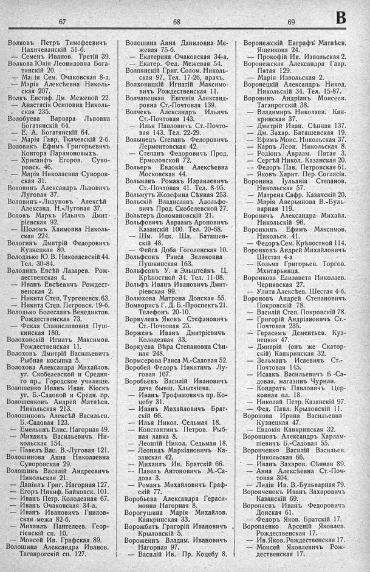

Лист источника 373
Скан

Распознанный текст
67
Волковъ Петръ Тимоѳеевичъ
Нахичеванскій 51-б.
— Семенъ Иванов. Третій 39.
Волкова Юлія Леонидовна Бога-
тянскій 20.
— Марія Сем. Очаковская 8-а.
— Марія Алексѣевна Николь-
ская 207.
Волкъ Евстаф. Дм. Межевой 22.
— Анастасія Осиповна Николь-
ская 235.
Волобуева Варвара Львовна
Богатянскій 64.
— Е. А. Богатянскій 64.
— Марія Гавр. Ткачевскій 2-б.
Воловикъ Ефимъ Григорьевичъ
Контора Парамоновыхъ.
— Хрисанфъ Егоров. Суво-
ровск. 46.
— Марія Николаевна Суворов-
ская 31.
Воловинъ Александръ Львовичъ
Луговая 37.
Воловинъ -Лизуновъ Алексѣй
Александ. Н.-Луговая 37.
Воловъ Маркъ Ильичъ Дмит-
ріевская 92.
— Шоломъ Хаимовна Николь-
ская 224.
Вологинъ Дмитрій Федоровичъ
Кузнецкая 80.
Володзько Ю. В. Николаевскій 44.
Тел. 30-84.
Володинъ Евсѣй Лазарев. Рож-
дественская 4.
— Иванъ Евсѣевичъ Рождест-
венская 2.
— Никита Степ. Тургеневск. 63.
— Никита Степ. Петровск. 19-б.
Володько Болеславъ Венедиктов.
Рождественская 73.
— Фекла Станиславовна Пуш-
кинская 180.
Волоховскій Игнатъ Максимов.
Рождественская 11.
Волоховъ Дмитрій Васильевичъ
Рыбная косынка 5.
Волохова Александра Михайлов.
уг. Скобелевской и Средня-
го пр., Городское училище.
Волошенко Иванъ Иван. Кіоскъ
уг. Б.-Садовой и Средн. пр.
Волошенковъ Андрей Матвѣев.
Никольская 213.
Волошиновъ Алексѣй Васильев.
Б.-Садовая 123.
— Емельянъ Елис. Нагорная 49.
— Михаилъ Васильевичъ Ни-
кольская 154.
— Павелъ Вас. В.-Луговая 121.
Волошинова Анна Николаевна
Суворовская 29.
Волошинъ Василій Андреевичъ
Никольская 21.
— Даніилъ Григ. Нагорная 127.
— Егоръ Никиф. Байковск. 101.
— Иванъ Петр. Колодезная 67.
— Иванъ Очаковская 34-а.
— Иванъ Ивановичъ Гнилов-
ская межа 82-б.
— Михаилъ Пантелеев. Геор-
гіевскій сп. 10.
— Моисей Ив. Графская 89.
Волошина Александра Иванов.
Таганрогскій сп. 127.
68
Волошина Анна Даниловна Ме-
жевая 75-б.
— Екатерина Очаковская 34-а.
— Екатер. Фед. Межевая 54.
Волпянскій Григ. Солом. Николь-
ская 97. Тел. 17-26, врачъ.
Волховицкій Игнатій Максимо-
вичъ Рождественская 11.
Волчанецкая Евгенія Александ-
ровна Ст.-Почтовая 139.
Волчекъ Александръ Ильичъ
Ст.-Почтовая 143.
— Илья Павловичъ Ст.-Почто-
вая 143. Тел. 22-29.
Волынецъ Степанъ Федоровичъ
Лермонтовская 42.
— Степанъ Федоровичъ Прод.
Ермоловской 72.
Вольеръ Евдокія Алексѣевна
Московская 44.
Вольманъ Романъ Израилевичъ
Ст.-Почтовая 41. Тел. 8-95.
Вольмутъ Жозефина Сѣнная 253.
Вольскій Владиславъ Адольфо-
вичъ Прод. Скобелевской 27.
Вольтеръ Доломановскій 21.
Вольфовичъ Авраамъ Ароновичъ
Казанскій 100. Тел. 20-68.
— Шм. Ицк. Шл. Баташев-
скій 48.
— Фейга Доба Гоголевская 10.
Вольфсонъ Раиса Зеликовна
Пушкинская 163.
Вольфсонъ У. и Эльштейнъ Ц.
Крѣпостной 34. Тел. 11-08.
Вольфъ Иванъ Ивановичъ Дмит-
ріевская 99.
Волюхова Матрена Донская 55.
Вомворисъ Г. Д. Б.-Проспектъ 21.
Телефонъ 20-10.
Ворвулевъ Яковъ Стефановичъ
Ст.-Почтовая 25.
Воржевъ Иванъ Дмитріевичъ
Колодезная 33.
Воркуева Вѣра Степановна Сѣн-
ная 248.
Вормсерова Раиса М.-Садовая 52.
Воробей Федоръ Никитичъ Лу-
говая 107.
Воробьевъ Василій Ивановичъ
дача бывш. Хлытчіева.
— Иванъ Трофимовичъ пр. Ко-
цебу 31.
— Иванъ Михайловичъ Брат-
скій 66.
— Илья Никол. Седьмая 18.
— Константинъ Петров. Рыб-
ная лавка 8.
— Леонтій Никол. Седьмая 18.
— Леонидъ Маркіановичъ Ка-
занская 42.
— Михаилъ Ив. Братскій 66.
— Павелъ Антоновичъ М.-Са-
дова 3.
— Романъ Михайловичъ Граф-
скій 77.
Воробьева Александра Гераси-
мовна Нагорная 8.
Ворогушина Марія Михайлов.
Канкринская 33.
Ворожбитъ Григорій Ивановичъ
Крыловскій 5.
Ворожеинъ Владим. Ивановичъ
Нагорная 97.
— Василій Ив. Пр. Коцебу 8.
69
В
Воронежскій Евграфъ Матвѣев.
Ященкова 24.
— Прокофій Ив. Извольская 2.
Воронежская Александра Гавр.
Пятая 129.
— Марія Извольская 2.
Воронецкій Александръ Никод.
Никольскій 34. Тел. 15-87.
Воронинъ Андріанъ Моисеев.
Таганрогскій 38.
— Владимиръ Николаев. Кан-
кринская 37.
— Дмитрій Иван. Сѣнная 137.
— Дм. Захар. Баташевская 19.
— Ефимъ Моис. Никольская 37.
— Карпъ Леон. Никольская 8.
— Родіонъ Авраам. Пятая 3.
— Сергѣй Никол. Казанская 20.
— Федоръ Пав. Петровская 61.
— Яковъ Харит. Пер. Согласія.
Воронина Іульянія Степанов.
Никольская 57.
— Матрена Сафр. Казанскій 20.
— Марія Аверьянова В.-Буль-
варная 119.
Вороничъ Александра Михайл.
Никольскій 96.
Воронкинъ Ефимъ Максимов.
Никольск. 41.
— Федоръ Сем. Крѣпостной 114.
Воронковъ Андрей Михайловичъ
Шестая 4-а
— Козьма Григорьев. Торгов.
Мхитарьянца.
Воронкова Елизавета Николаев.
Чернявская 27.
— Улита Алексѣев. Шестая 4-б.
Вороновъ Андрей Степановичъ
Покровскій 78.
— Василій Степ. Покровскій 78.
— Григорій Андріановичъ Ст.-
Почтовая 235.
— Герасимъ Дементьев. Куз-
нецкая 47.
— Дмитрій (онъ же Скатор-
скій) Канкринская 32.
— Зельманъ Исаевичъ Ст.-
Почтовая 145.
— Исаакъ Васильевичъ Б.-Са-
довая, магазинъ Чурили.
— Кондратъ Павловичъ Цер-
ковная пл. 18.
— Николай Петр. Казанскій 97.
— Фед. Павл. Крыловскій 11.
Воронова Ирина Васильевна
Кузнецкая 47.
— Евдокія Канкринская 32.
Воронцовъ Александръ Харлам-
піевичъ Б.-Садовая 55.
Воронченко Василій Васильев.
Никольская 66.
— Иванъ Захаров. Сѣнная 89.
— Анна Алексѣевна Ст.-Поч-
товая 304.
— Лидія Ив. В.-Бульварная 79.
Воронченокъ Иванъ Захаровичъ
Казанскій 69.
Воропаевъ Иванъ Федоровичъ
Донская 61.
— Федоръ Яков. Братскій 17.
Воропаенко Арсеній Яковлев.
Рождественская 17.
— Ив. Яков. Рождественская 17.
— Моисей Яковлевичъ Рож-
дественская 17.